+

Low back pain
Pain in the lower back, the most common MSD.
Learn moreA broken tool can be replaced. Your back, your shoulders and your knees have to last. This training covers preventing musculoskeletal disorders (MSDs) in underground mining.
Musculoskeletal disorder: damage to muscles, tendons, nerves, ligaments or joints, caused or made worse by work.
Click a card for the details
Pain in the lower back, the most common MSD.
Learn more
Inflammation of a tendon: shoulder, elbow, wrist.
Learn more
Inflammation of the bursae: knees, shoulders.
Learn more
Compression of the median nerve at the wrist.
Learn moreIt's not just a sudden injury. Most MSDs set in through wear and tear, from repetition, force or bad postures over long stretches of time.
Where it hits the most: click the silhouette or a card
Click a red dot to open that area's card
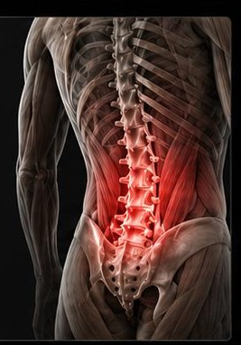
Handling, bending, twisting, heavy loads
Factors & prevention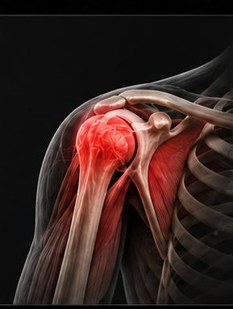
Working with arms raised, vibrations, overhead loads
Factors & prevention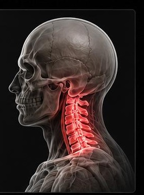
Static postures, head bent forward, helmet and lamp
Factors & prevention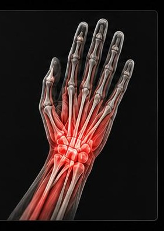
Vibrating tools, repeated gripping, tightening
Factors & prevention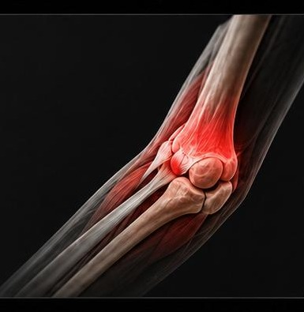
Repeated movements, twisting force
Factors & prevention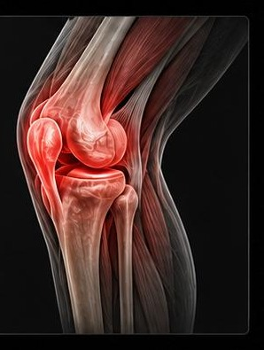
Squatting, kneeling, uneven ground
Factors & preventionHeavy loads, intense efforts.
The same movements, over and over.
Bent back, raised arms, twisting.
Vibrating tools and machines.
Makes tissues less flexible.
Staying frozen in place for a long time.
For workers, the risk comes mostly from the task, the body and the immediate environment.
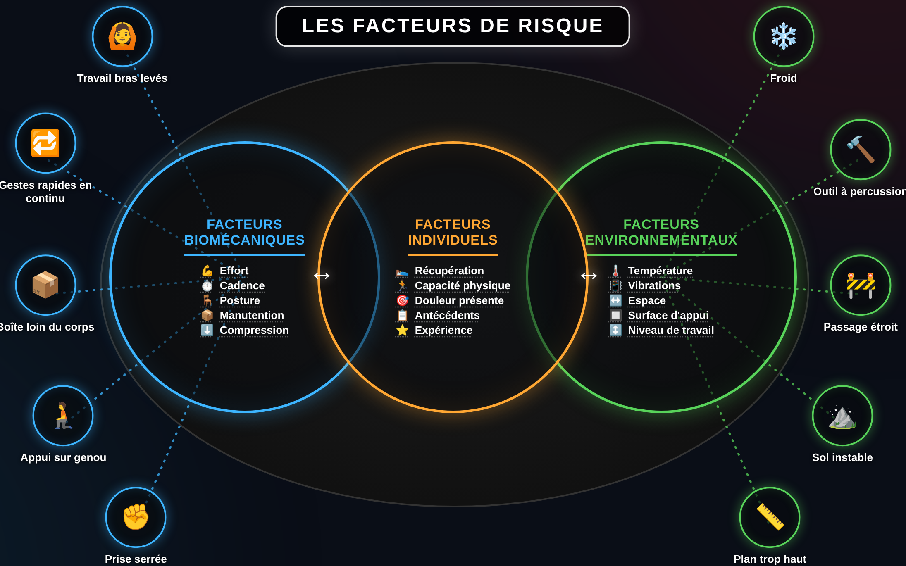
🔍 Zoom inAn MSD doesn't have a single cause: it's a mix of effort, posture, repetition, fatigue and environment. Acting early helps keep the problem from setting in.
After the training: explore the interactive diagram — every factor is clickable, with a body map and a workstation simulator.
Fatigue builds up, and alertness drops at the end of the shift.
Rods, hoses and heavy equipment often moved by hand.
Working bent over, crouched or kneeling, in positions you can't choose.
Unstable footing, extra strain on the back and knees.
Symptoms show up gradually. By the time the condition is fully set in, it's already late to step in.
The right time to act is at stage 1. The longer you wait, the longer and less certain the recovery.
Repeated muscle contractions create microtears in the muscle and tendon fibres, which triggers an inflammatory response. What happens next depends on recovery time:
Muscles get stronger and tendons more resistant.
Chronic breakdown of the tissues.
 🔍 Zoom in
🔍 Zoom inRecovery time decides whether the tissues adapt or break down. — Docking et Cook, 2019
Work-related MSDs are among the most common occupational disorders. Sources: CNESST (2023) · INSPQ, Work-related musculoskeletal disorders.
An MSD shows up when the load put on the body repeatedly outpaces its ability to recover.
Perceived exertion is how hard the muscle work feels relative to a worker's maximum capacity. Click a level or drag to explore the Borg scale.
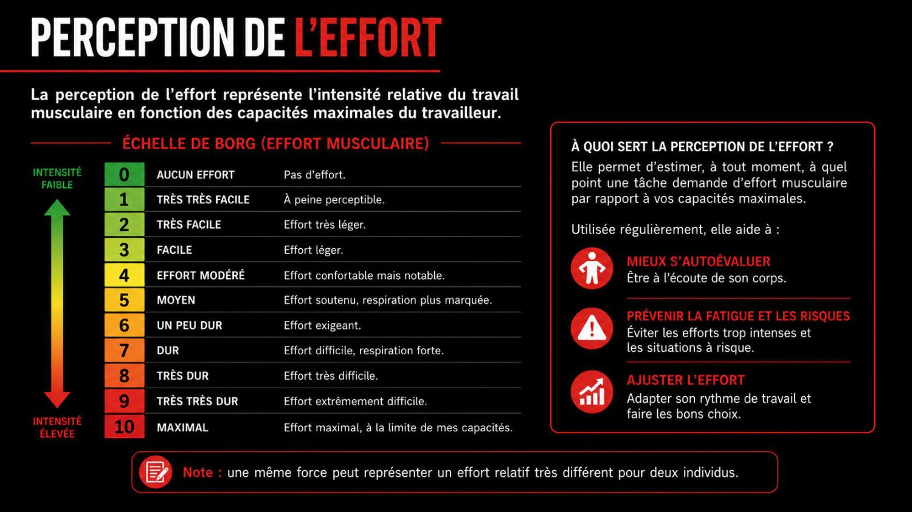
🔍 Zoom inThe same force can feel like a very different relative effort for two different people.
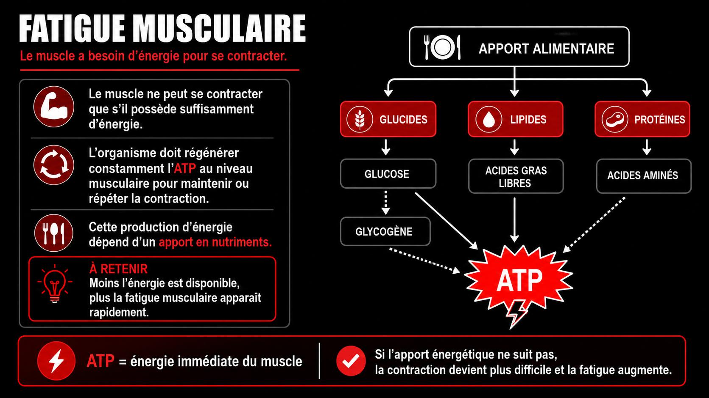
🔍 Zoom inThe muscle needs energy (ATP) to contract. The less energy is available, the faster fatigue sets in.
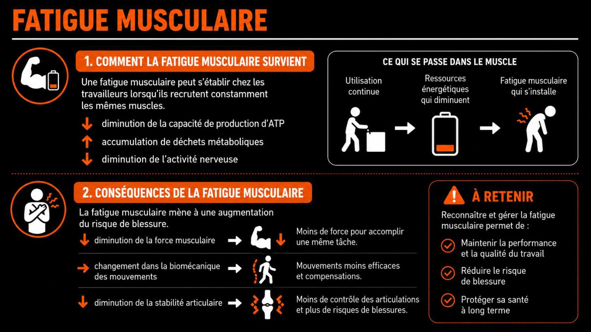
🔍 Zoom in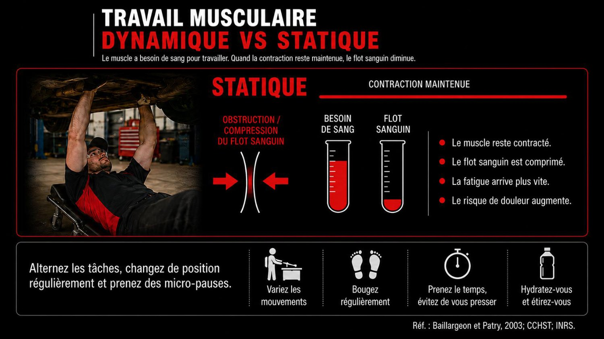
🔍 Zoom inStatic work: the muscle stays contracted, blood flow gets squeezed, and fatigue comes faster.
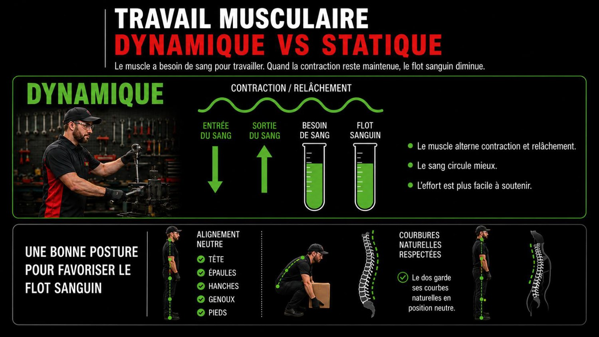
🔍 Zoom inDynamic work: contraction and relaxation take turns, blood flows better, and the effort is easier to keep up.
Holding muscles still tires the body out. Even sitting, your muscles are working. When a muscle stays contracted, it can cause fatigue, discomfort and pain.
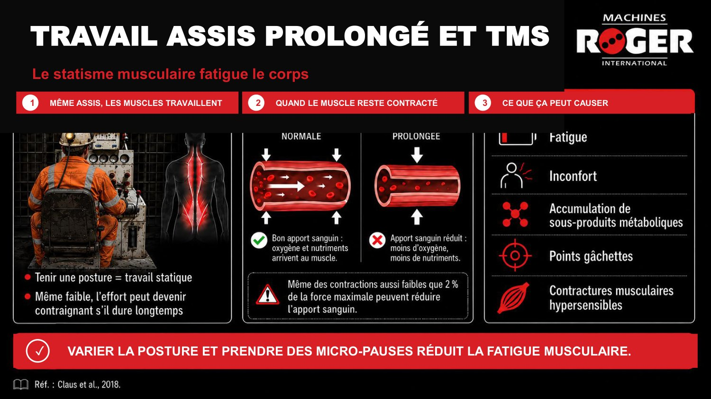
🔍 Zoom in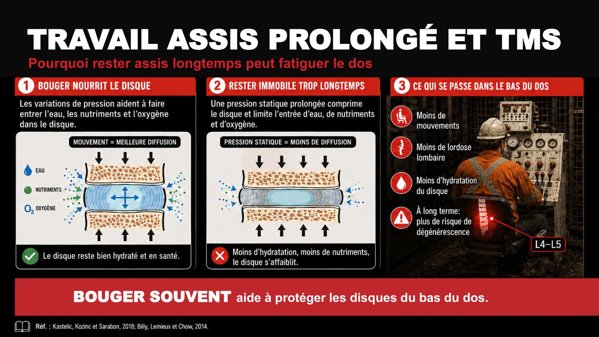
🔍 Zoom inSwitching up your posture and taking micro-breaks cuts down muscle fatigue. Moving often helps protect the discs in your lower back.
Your body's number one repair crew. While you sleep, your body repairs itself.
Muscles, tendons and joints rebuild themselves mostly at night.
Growth hormone, released in deep sleep, repairs tissues.
Good sleep lowers your sensitivity to pain and inflammation.
Memory and focus get locked in. You stay sharp on the next shift.
When you're short on sleep, your whole body pays the price.
Staying awake 17 to 19 hours straight affects your alertness as much as a blood alcohol level of 0.05.
Your body isn't naturally built to sleep during the day. These habits help you recover better between shifts.
Blackout curtains, earplugs, a mask. Darkness mimics night.
Same ritual before sleep, even if it's morning.
No coffee in the 6 hours before your planned sleep.
A short 20 to 30 minute nap before a night shift.
Get bright light to kick your alertness back up.
Let the people around you know, turn off notifications.
Four everyday levers: water, food, movement and habits.
A dehydrated muscle tires faster, gets stiffer and cramps more easily. Underground, in the heat and with the effort, you lose a lot of water without realizing it. Dehydration cuts your focus and raises the risk of a wrong move.
Thirst is already a sign of dehydration.
Within reach, you drink more often.
Clear urine = well hydrated. Dark = drink more.
Food is fuel.
Complete meals: whole grains, vegetables, protein. They prevent energy crashes mid-shift.
Meat, fish, eggs, legumes: the building blocks that rebuild the muscles you've worked.
Sugary drinks and snacks: a quick boost followed by a crash. Up-and-down alertness.
Fruits, vegetables and fatty fish help your body handle the inflammation that comes with exertion.
Move and stay mobile. A strong, flexible body handles the workload better. Movement outside of work is part of prevention.
A strong back and abs protect your spine while you handle loads.
Flexible muscles move through a greater range without getting hurt.
Walk and move on your days off. Sitting for long stretches stiffens your body too.
Tobacco, alcohol, cannabis: their effects on recovery.
Cuts blood flow to your tissues, so the muscles and tendons you've worked heal more slowly.
Helps you fall asleep but breaks up your deep sleep. Less repair, more fatigue the next day.
Affects your alertness, coordination and reaction time. The effect can last several hours.
What you can put into practice as soon as tomorrow to protect your back, your shoulders and your joints.
 🔍 Zoom in
🔍 Zoom inLoad close to your body, respect the natural curves of your back, pivot with your feet, work at the right height: good postures reduce the pressure on your spine, your muscles and your joints.
 🔍 Zoom in
🔍 Zoom inLoad far from your body, rounded back under effort, twisting your trunk and reaching with your arms for too long: the postures that add pressure on your spine.
Slide it to simulate the angle of your arm relative to your body. The bigger the angle, the more strain on your shoulder. Past 60° held for a while, the risk goes way up.
 🔍 Zoom in
🔍 Zoom inShoulders, wrists and hands: the further the position gets from neutral, the more the strain goes up. 0 to 20 degrees = comfort, 20 to 45 = watch out, more than 45 = awkward.
A cold muscle gets hurt more easily. 5 minutes of warm-up beats weeks off work.
Alternate between standing, crouching and moving. No posture is good for too long.
A few seconds to let your muscles relax before they tense up.
When you can, change up the movement to rest the areas you've been using.
A few targeted stretches through the shift keep your muscles loose.
A discomfort that keeps coming back isn't a weakness to hide. It's information to share fast.
All MSD prevention comes down to two pillars.
Your body is your number one work tool. Take care of it today so it lasts your whole career.
Next step: the final quiz. Pass it (6/8 minimum) to unlock your training certificate.
8 questions to lock in the key points of the training. Pick an answer to see the explanation. Pass 6/8 to unlock the certificate.
The certificate unlocks once the training is complete and the quiz is passed.
Tracking the worker's results on this device (local data).